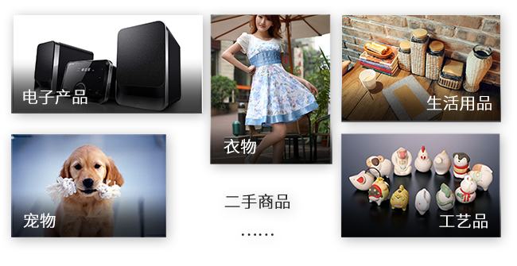
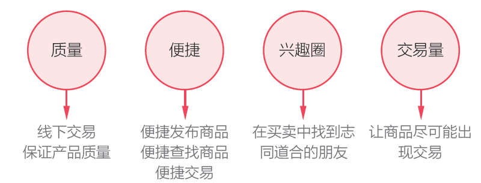
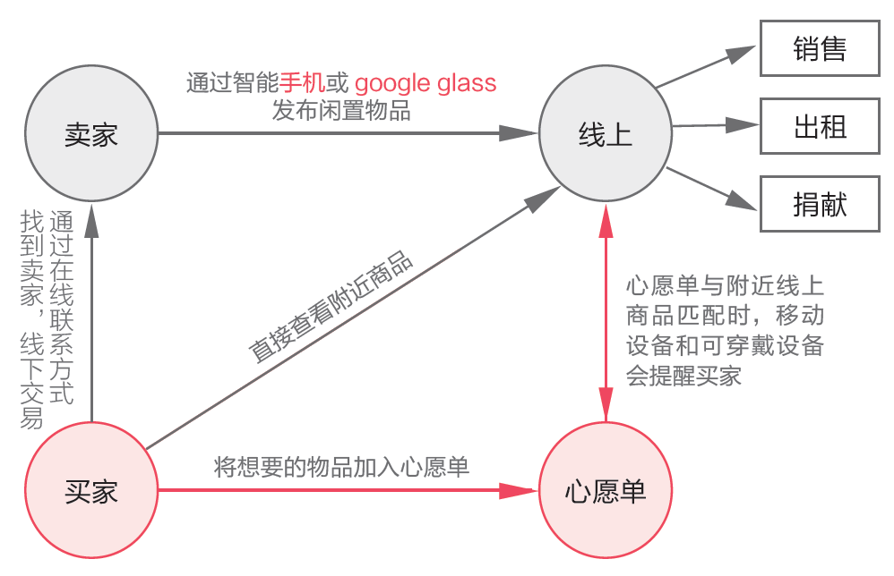
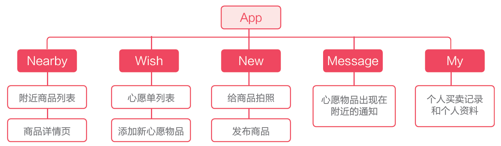
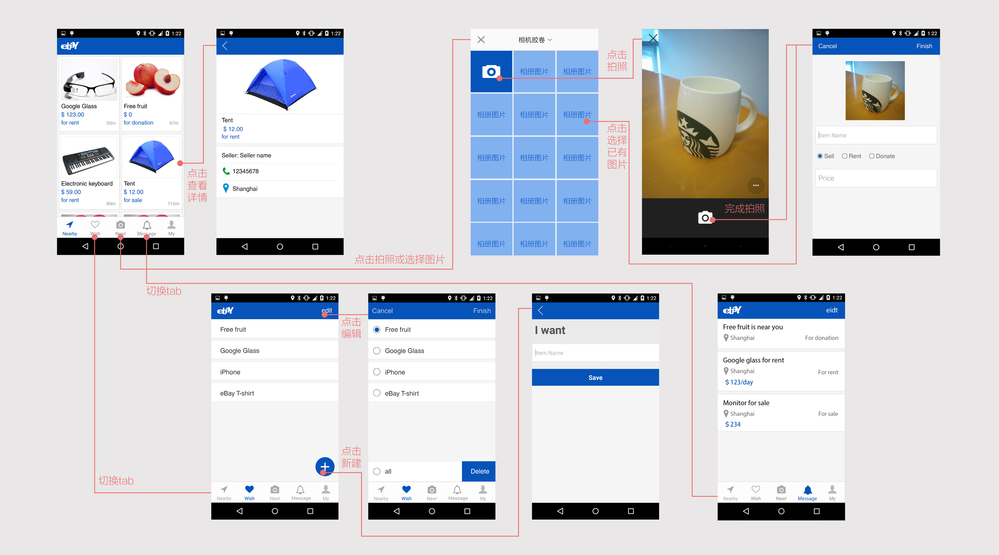
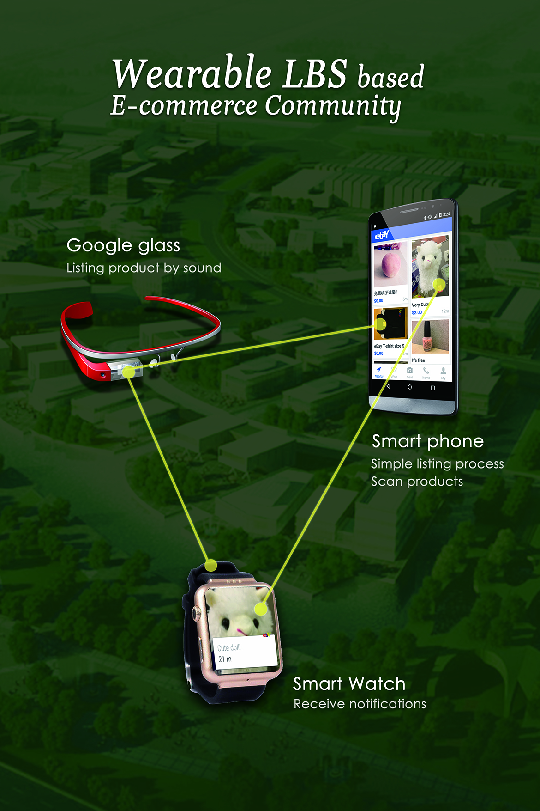

eBay Hack Week
本项目为参加eBay hack week 比赛的虚拟项目，在一周内进行头脑风暴、构思、设计、展示解说。本项目为基于LBS 和可戴
设备的二手交易平台，用最简单的步骤帮助更多普通人售出自己不需要的产品，获得了eBay hack week 全国一等奖，全球10 强。
本人在四人团队中担任唯一设计师，参与方案讨论、功能设定，负责全部视觉设计以及ppt 和视频制作。
视频Demo
需求分析
1. 人们通常拥有或多或少的闲置物品，不用了又舍不得扔掉；
2. 二手商品价格较低，但质量参差不齐，质量难以保障；
3. 二手卖家不是专业卖家，只能用业余时间来管理，越方便越好；
4. 买家往往有一定的偏好，如果能结识共同爱好的好友那是极好；
5. 有的卖家发布的商品好久都无人问津，就对买卖失去了兴趣；

设计目标
1. 保证二手商品质量：可考虑采用线下交易，一手交钱一手交货；
2. 便捷：让发布、查找、交易商品等过程尽可能便捷；
3. 兴趣圈：让用户找到与自己志趣相投的朋友；
4. 交易量：尽量提高商品的交易量，可考虑多种交易方式；

设计要点
1. 简化商品发布的流程
相比于eBay 原有的商品发布时要填写的各种表单，我们的产品只需填写商品名称及价格，降低卖家门槛；
2. 多样的交易方式、提高交易量
用户不仅可以卖，还可以租或者捐献，大大提高了各种商品被发布的可能性，为eBay 带来更多的流量；
3. 给用户创造惊喜、创造价值
用户可以从主动浏览商品变成被动等待物品来匹配自己的wish list，当收到匹配成功的通知时会有一种惊喜；
4. 帮用户创造兴趣圈子
通过线上线下的交流，买家和卖家容易因为对同一个东西有兴趣爱好而成为线下的好朋友；

信息架构

页面设计

视频Demo
